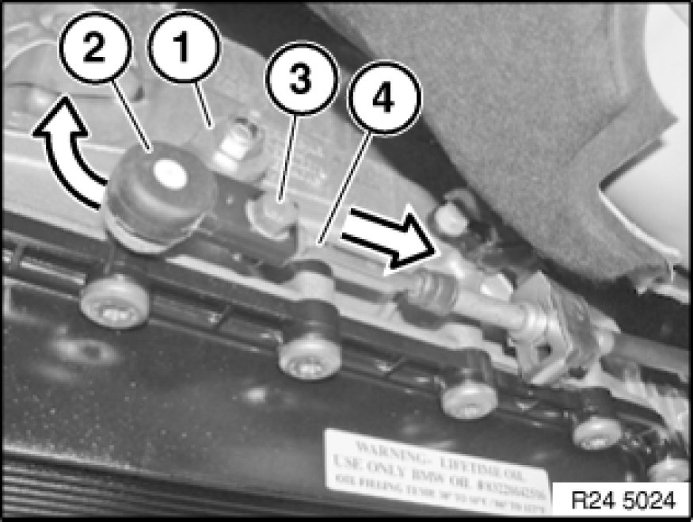

24 00 018 Adjusting Shift Lever
24 00 018 - Adjusting shift lever

Note:
Check cable for ease of movement.
Move selector lever to "P" position.

Press gear lever (1) forward into park position.
Clip shift cable head (2) onto ball head of gear lever.
Unscrew bolt (3).
Press cable (4) in direction of arrow, then release again.
Tighten screw (3).
Tightening torque 25 16 2AZ Specifications.
Installation:
Move selector lever to "P" position.
Check whether parking gear is engaged by turning propeller shaft.